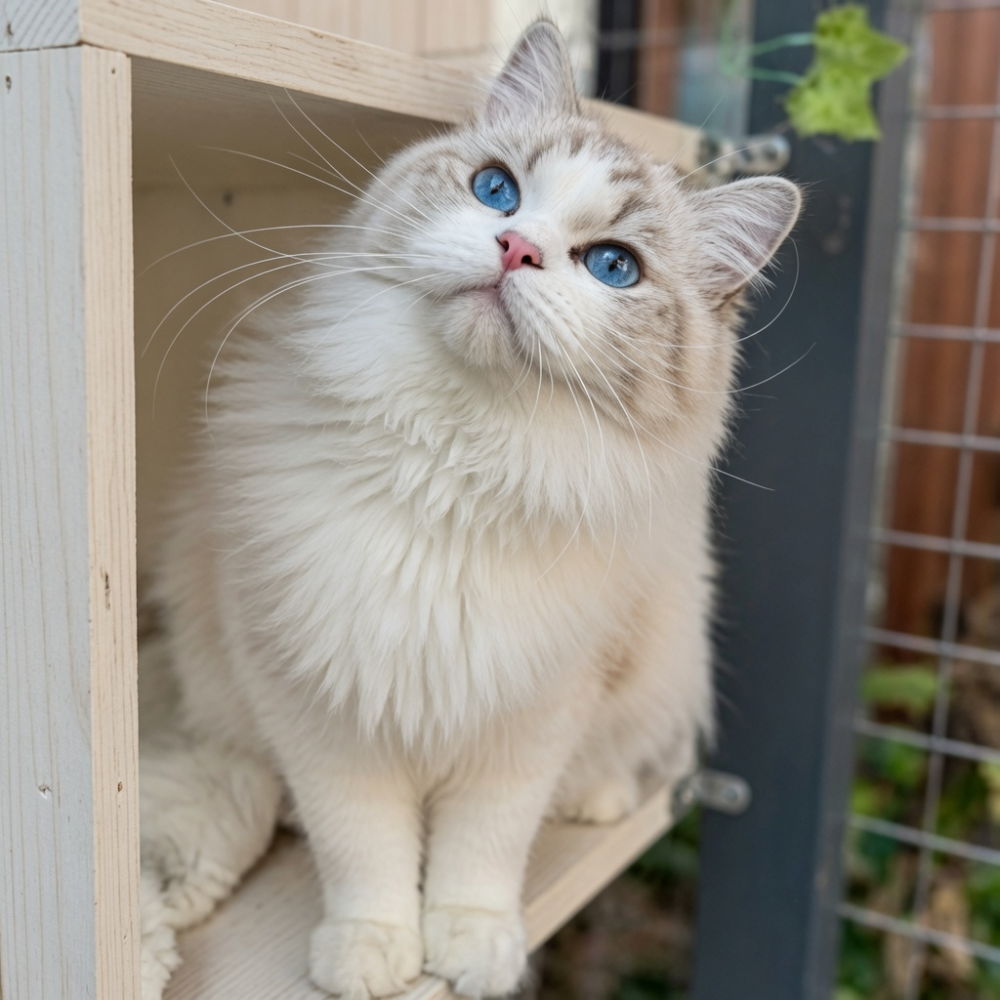
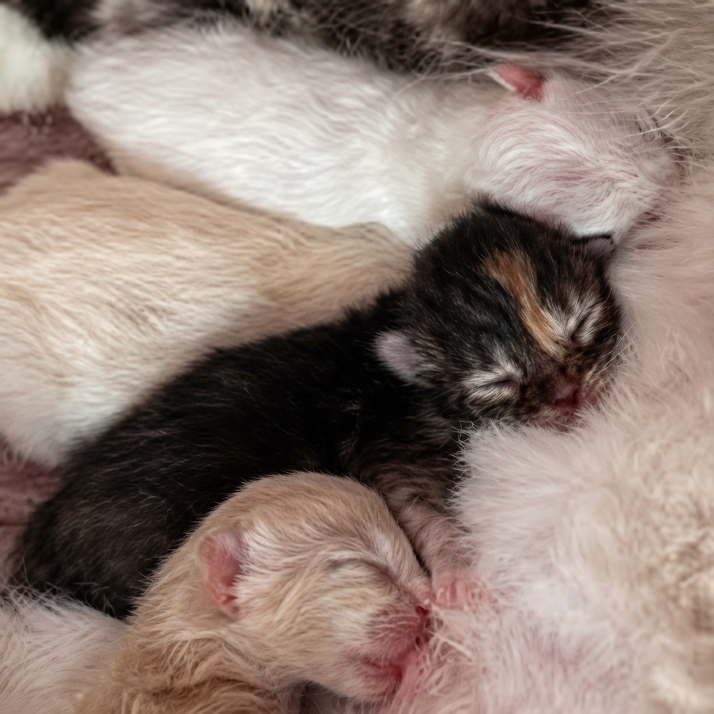
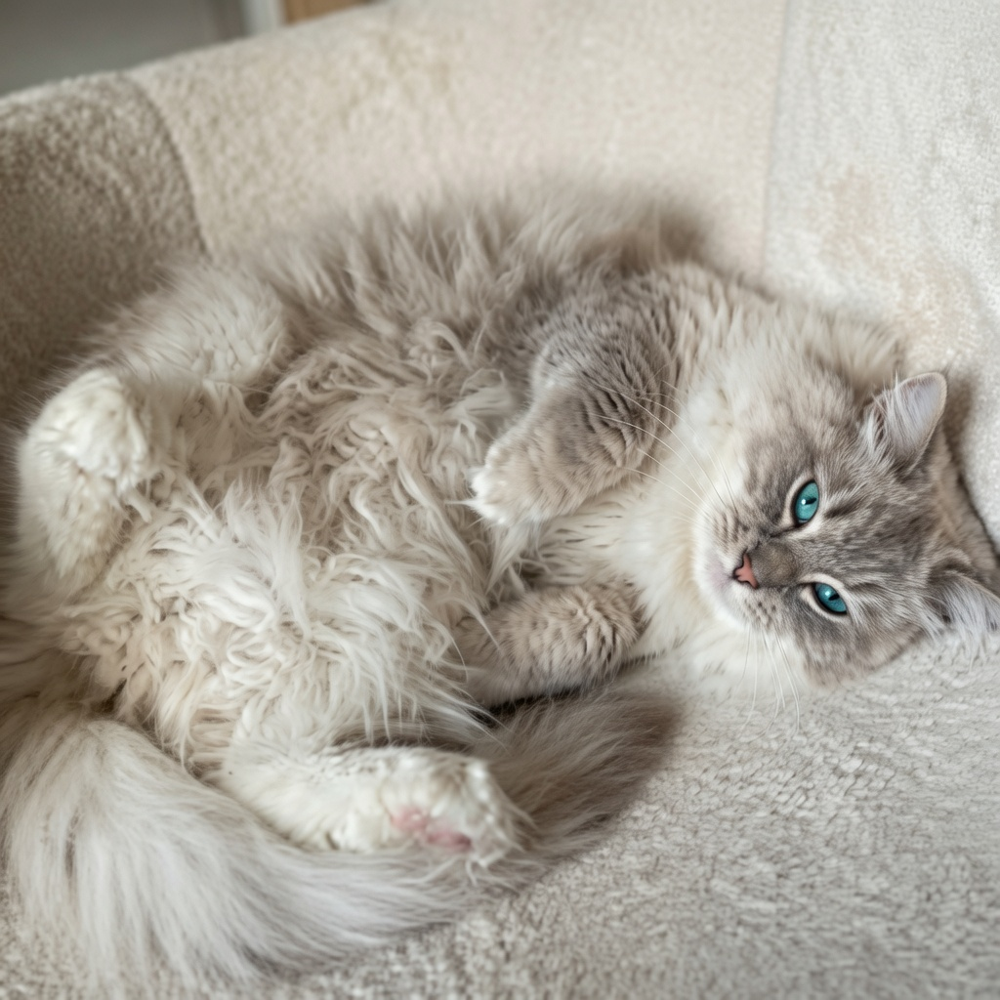

Bien-être avant tout
Les chats vivent dans un environnement calme, confortable et adapté à leurs besoins quotidiens.
La Chatterie Berceau Étoilé est née d’une véritable passion pour le Ragdoll, avec l’envie d’offrir à chaque chat un environnement rassurant, équilibré et profondément familial.


Berceau Étoilé est une chatterie familiale où l’amour du Ragdoll s’accompagne d’une vraie exigence de qualité, de douceur et de responsabilité. Ici, les chats grandissent au cœur du foyer, dans un cadre pensé pour leur équilibre.
Chaque portée est suivie avec attention, dans le respect du rythme des bébés, de leur socialisation et de leur futur départ dans leur famille. L’objectif n’est pas seulement de faire naître de beaux chatons, mais surtout de faire grandir des compagnons confiants, équilibrés et bien dans leurs pattes.
Chaque choix est pensé pour offrir aux chats un cadre de vie sain, doux et stimulant, et aux familles un accompagnement rassurant.
Les chats vivent dans un environnement calme, confortable et adapté à leurs besoins quotidiens.
Les chatons grandissent au contact de la vie de famille afin de devenir confiants et équilibrés.
Chaque adoption s’inscrit dans une vraie démarche d’échange, de conseils et de suivi.
La chatterie s’organise autour d’espaces aménagés pour répondre aux besoins des adultes, des mamans et des chatons, tout en conservant une vraie atmosphère de maison.

Les chats évoluent dans un cadre chaleureux, avec de la présence, des repères et une attention constante portée à leur équilibre.
Nurserie, maternité, coins repos, zones calmes et espaces de jeu permettent d’accompagner chaque étape de leur vie.
Parcours, jeux, cachettes, arbres à chat et coins douillets participent à leur bien-être physique et émotionnel.
La chatterie accorde une grande importance au suivi de la santé, aux bonnes conditions de développement et à la préparation du départ des chatons.
Observation, croissance, évolution et accompagnement des bébés au quotidien.
Chaque chaton rejoint sa famille au bon moment, avec ses repères et un cadre rassurant.
Un accompagnement est proposé afin de favoriser une belle transition vers le nouveau foyer.

Si vous souhaitez en savoir plus sur les reproducteurs, les chatons disponibles ou les modalités d’adoption, poursuivez la visite du site ou contactez directement la chatterie.